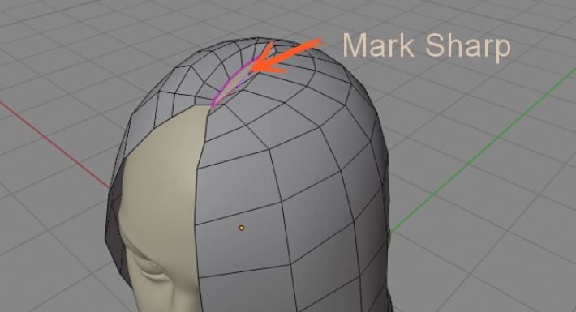
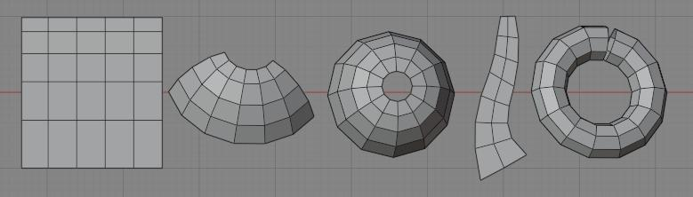
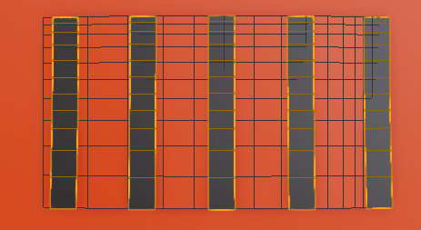

Strands from grid surface¶
It uses Strands from Grid Surface Hair Generator, where active mesh will be used as guide for strands flow. Guide mesh has to have grid topology: made of quads,

Useful for: long hair, eyelashes, hair buns, layered type of hair etc. It's designed to generate low poly mesh, so it runs smoothly mobile games.
Use Ctrl+Shift+H > Curves from grid surface to add Hair System preset, where active mesh will guide generated strands
Note: In older Hair Tool 2.4x series, you could directly edit generated curves (in edit mode). In HTool 3.x these curves are generated procedurally in geometry nodes, thus you cannot edit them directly. First use Bake option to convert these procedural curves to real geometry.
Note: If you want to cover head scalp uniformly with hair, then use standard Hair System with Strand Generator instead.
Video Tutorial¶
First 12 minutes shows how to use 'Curves from Grid Surface'. Rest is about creation of actual hair - can be skipped
Proper grid mesh¶
The guide mesh must be made from quads, and one border edge loop must be marked as sharp (or crease) - this edge will become the growth point for hair strands.  Select border edge loop > Ctrl+E > Mark Sharp (or Crease)
Examples of proper topology  A torus is acceptable as long as you break one of the loops to create a border edge
If we flatten these 3D meshes, we would get a regular grid like this:

For actual hair, you would want to model these meshes more carefully - following the main hair masses and hair flow.
Examples of bad topology:

Note: The first mesh is bad because it has no subdivision. The last torus does not have any border edge that could be used as a marker for the roots of hair.
Parameters¶
You can adjust strands count, number of points per spline etc. Guide mesh topology can be used to affect density of generated strands: in places where grid surface is denser more strands (or more points) may be generated.
 Strands count - number of strands to generate
Uniform Strands Spacing - Distribute strands uniformly. If not, then more strands will be placed at denser grid surface areas (in this case - more on right)
 Uniform Points Spacing - Distribute points uniformly along each strand. If not, then more points will be placed at denser grid surface areas (in this case - more on right)
Uniform Points Spacing - Distribute points uniformly along each strand. If not, then more points will be placed at denser grid surface areas (in this case - more on right)
 Randomize Spacing - Randomize spacing between strands
Randomize Spacing - Randomize spacing between strands
Use Crease Edge - by default strands will be generated from edge marked as sharp. You can use crease edge instead, if you want to generate strands from creased edges
Hook First Segment - use if you want to 'glue' first segment of each strand to the first two loops of grid surface. This helps with embedding hair strand roots into scalp, without hair clipping through head